Marsım ve Venüsüm,
Size çokça yıl uzaktan yazıyorum bu satırları.
Karanlık bir fırtınanın içinde, yıpranmış bir yelkenlinin dümenindeyim.
Yıldızlar yok dalgalar hırçın ben ise kararlıyım.
Beni alabora etmek siteyen rüzgarları yelkenlerime doldurdum sizlere geliyorum
Bir gün kavuşmak dileği ile...
Babanız,